<!--
  Generated template for the InstallTabPage page.

  See http://ionicframework.com/docs/components/#navigation for more info on
  Ionic pages and navigation.
-->
<ion-header>

  <ion-navbar  color="primary" >
    <ion-title  >安装</ion-title>
  </ion-navbar>

</ion-header>


<ion-content padding>
  <ion-item>
    <div  class="scan" >
      
    </div>
    <!--<button  (click)="scan()" ion-button full><ion-icon name="qr-scanner"></ion-icon></button>-->
    <!--<div>-->
      <!--扫描结果:{{scanInfo | json }}-->
    <!--</div>-->
    <button  (click)="test1()" ion-button full>跳转</button>
  </ion-item>

  <ion-item   *ngIf="device!=null"  >
  <!--<ion-item id="successInfo" [ngClass]="{'isHidden': device == null}"  >-->
      <table>
        <tr><th><h1>设备注册成功</h1></th></tr>
        <tr><td>设备序列号</td><td>{{device.snCode}}</td></tr>
        <tr><td>设备激活状态</td><td>未激活(未通电)</td></tr>
        <tr><td>灯杆编号</td><td>{{device.postNum}}</td></tr>
        <tr><td>经纬度</td><td>{{device.longitudeLatitude}}</td></tr>
        <tr><td>所属街道</td><td>{{device.street}}</td></tr>
      </table>
  </ion-item>
</ion-content>
